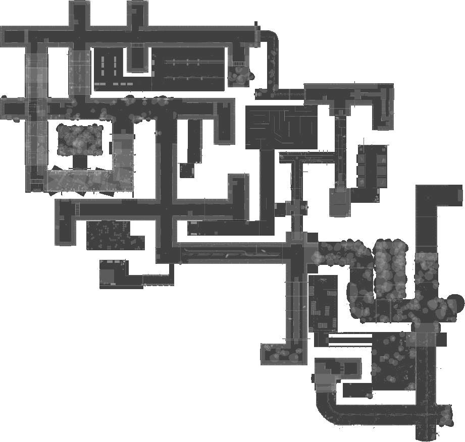

Level 5: Sewerage
Information
The Sewerage are dark, damp, and dirty, with water flowing through them. The walls of the Sewerage are made of concrete and bricks, and there are sometimes pipes and valves running along the sides of the walls. The floors are covered in a layer of slime and moss, and there are occasional rocks or debris scattered around. There is a small area with grate flooring and walls.
WalkThrough
-
Head to the water treatment room and look for a note. Write down the code for a padlock.
-
Head to the garbage room with the obtained code. Use the code to unlock the padlock on a locker and obtain the Metal Detector. Take note of the wire information listed on a note in the garbage room. Also, grab the Gear Handle Lever that can be found anywhere in the room.
-
Roam around the Sewerage with the metal detector. Look for a Storage Room Key, a Water Treatment Key, and two Medallions. The Metal Detector will beep if any of these four items are nearby.
-
After collecting the Medallions and Keys, head to the storage room and unlock the door. Grab the Oil Drums and a Bucket before leaving. Solve the small wire puzzle using the information obtained from the note in the garbage room. This will disable some lethal spikes located in the Jail Maze.
-
Head to a room containing a Jail Maze. Find your way through the maze and access a small corridor with the spike traps where you press a button revealing a room that contains the third and final Medallion (This Medallion can not be found using the metal detector).
-
Solve the number sliding puzzle. The number combination is random each time, so It might be helpful to use an online solver to solve the puzzle. This will disable the crushers in the crusher room.
-
Head to the crusher room and note the order of the Medallions on the statue.
-
Head to the oil room to fill up your Oil Drums. Left-click while interacting with the barrels to determine whether or not they may contain oil.
-
Go back to the water treatment room. Use the key to unlock the medallion room. Pour the oil into the three pipes to make the Clumps leave the water. Input the medallions in the order displayed on the statue to destroy it.
-
Head back to the statue and pick up the Gear Cog.
-
With the Gear Cog in hand, head to the counterweight room. Solve the puzzle using the lever you picked up in the garbage room, and the cog you picked up in the crusher room. Insert the gear and attach the handle to one of the gears, then rotate the handle. The gears will click when you have the lever in the right direction. Unattach the lever and put it on another gear cog to turn that one to the right direction too. This will make the walls in the jail cells fall down, allowing access for you to grab the Sewer Exit Key and to use your bucket to pick up some human remains. Also, take note of the information found on a note in one of the cells as well.
-
Head to the exit. While you're there, go to the end of the hallway and grab one more piece of information from a note there.
-
Enter the final room in the Sewerage. Throw down the human remains so the Baby Death Rats do not attack you.
-
Sneak past the Death Rat to two separate wire panels. Solve the wire puzzles using the information from the two sewer exit notes.
-
Once the wire puzzles have been solved, you're done! You can now go through the unlocked exit door and climb the ladder. You have successfully escaped the Sewerage.